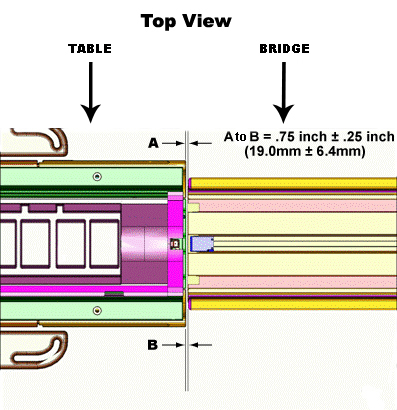
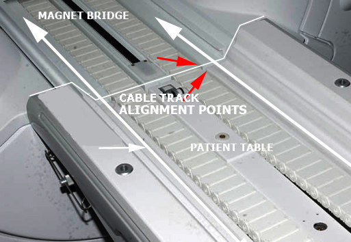
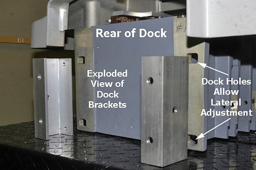

Operating Documentation
Direction 5670000, Rev# 1
Optima MR450w 1.5T Service Methods
Module Version 6.0, Version Date 8/19/08
Operating Documentation |
| Required Persons | Preliminary Reqs | Procedure | Finalization |
|---|---|---|---|
| 1 | Not Applicable | 45 mins | Not Applicable |
This document consist of the following:
Dock Centering—Dock Centering
Dock Hook Tension Adjustment—Dock Hook Tension Adjustment
| Item | Qty | Effectivity | Part# | Manufacturer | |
|---|---|---|---|---|---|
| Standard SAE Allen Wrench Set | 1 | - | - | - | |
| SAE Socket Set or Open-end Wrench | 1 | - | - | - | |
| Item | Qty | Effectivity | Part# | Manufacturer |
|---|---|---|---|---|
| 11 mm Washers | varies | - | - | - |
This procedure provides the Longitudinal Adjustment (i.e., in and out), and the Lateral Adjustment (i.e., left to right) to center the dock. For proper Patient Table docking, the dock assembly must be adjusted to meet two criteria:
Gap between Patient Table top and front of Magnet Enclosure must be 3/4 ± 1/4 inch (19.0 ± 6.4 mm). This ensures that the gap is narrow enough so the UP LIMIT sensor operates properly.
Dock assembly must be square to the bridge, so axis of cradle travel is the same for both Patient Table and bridge.
With the Patient Table docked, measure the distance from the Patient Table top to the front of the magnet bridge. See Illustration 1. Dimensions A and B should be 3/4 ± 1/4 inch (19.0 ± 6.4 mm) and should be equal to each other so the Patient Table top is colinear with the bridge.
Illustration 1: Table Dock Measurement

If adjustment is required, add or remove washers and re-measure until the proper gap is achieved.
Illustration 2: Dock Positioning Adjustment

Raise table to maximum height using Up foot pedal.
Dock Patient Table.
Drive table all the way into magnet. Perform dock lateral adjustment until satisfactory alignment is achieved.
Check alignment of Patient Table against bridge (checking left-to-right alignment only). Use cable track to line up table with magnet bridge. Use the inner edge corners of the table and magnet bridge as alignment points. Meanwhile, the height is adjusted using the Table Top Height Adjustment procedure.
Illustration 3: Cable Track Alignment Points

If adjustment is required, loosen screws on dock bracket (see Illustration 2) to rear of dock (see Illustration 4). Move dock left or right to proper position so cable tracks line up.
Illustration 4: Rear of Dock and Lateral Bolt Holes

Dock the Patient Table using the Up dock pedal, paying close attention to the force required to engage the docking mechanism. Initial docking should not require significant force to depress dock pedal.
Illustration 5: Dock Pedals

Note the following Dock Pedal Conditions:
When depressing the Dock Pedal in Step 1, if the force needed was other than a crisp snap at the bottom of the stroke, then one of two conditions are in effect and require you to take action:
Too Loose—minimal or no force at all was needed to reach the bottom of the stroke.
Too Tight—considerable to significant force was needed to reach the bottom of the stroke, resulting in a hard, strong snap at the end. CAUTION: Do not attempt to fully engage the Dock Pedal if the force needed is too strong. The hook will become overstressed and bend, thus resulting in its replacement.
Adjust the hook by loosening the lock nut at the rear of the hook and turning the hook clockwise (tighten) or counter-clockwise (loosen). One full turn is equal to 1/16 inch. NOTE: Patient Table must be undocked for all hook adjustments. Make appropriate number of turns on the hook, retighten the lock nut, and then retest the force needed on the Dock Pedal when docking the table.
Illustration 6: Dock Hook Tension Adjustment

Repeat Step 3 until you achieve a crisp snap of the hook when docking the Patient Table.
No finalization steps.